CODING AGENTS AS PIXEL WORLD MODELS
traex/DeepSeek-V4.1-Flash · common50_0048
点击播放 · 原生 RGB 像素
逐轮保存的候选
回放视频、检查图与代码变化。
每份候选均可单独播放。实际图片检查记录在下方工具轨迹中。
候选 01播放与检查图
点击播放 · 原生 RGB 像素
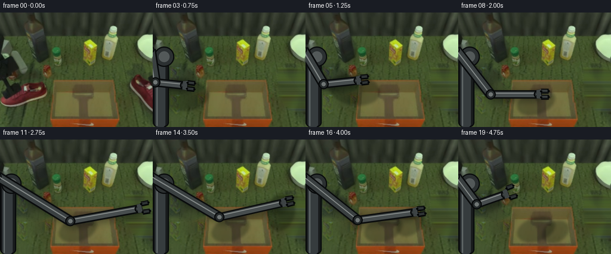
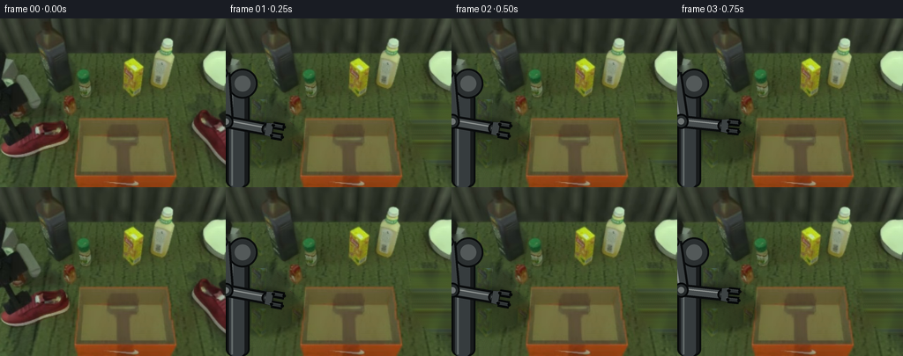
展开代码变化
--- 上一保存版本
+++ 本次保存版本
@@ -0,0 +1,393 @@
+from pathlib import Path
+import math
+
+import cv2
+import numpy as np
+from PIL import Image, ImageDraw, ImageFilter
+
+import artifact_io
+
+
+ROOT = Path(__file__).resolve().parent
+WIDTH = 256
+HEIGHT = 192
+FRAMES = 20
+
+
+def smoothstep(t):
+ t = max(0.0, min(1.0, t))
+ return t * t * (3.0 - 2.0 * t)
+
+
+def polygon_mask(shape, points):
+ mask = np.zeros(shape[:2], dtype=np.uint8)
+ cv2.fillPoly(mask, [np.asarray(points, dtype=np.int32)], 255)
+ return mask
+
+
+def build_background(first):
+ """Remove the two shoes and the foreground arm, then restore table texture."""
+ mask = np.zeros((HEIGHT, WIDTH), dtype=np.uint8)
+ arm_base = [(0, 55), (31, 55), (43, 83), (42, 192), (0, 192)]
+ left_gripper = [(20, 102), (54, 98), (75, 126), (58, 151), (28, 145)]
+ left_shoe = [
+ (0, 111), (17, 109), (36, 112), (53, 117), (70, 122),
+ (84, 130), (82, 145), (69, 153), (53, 158), (35, 161),
+ (18, 157), (4, 149), (0, 143),
+ ]
+ right_shoe = [
+ (211, 96), (228, 94), (245, 97), (255, 103), (255, 165),
+ (238, 165), (224, 155), (214, 137),
+ ]
+ for points in (arm_base, left_gripper, left_shoe, right_shoe):
+ mask = cv2.bitwise_or(mask, polygon_mask(first.shape, points))
+
+ # A slightly larger inpaint region absorbs dark contact pixels around the sprites.
+ mask = cv2.dilate(mask, np.ones((5, 5), np.uint8), iterations=1)
+ background = cv2.inpaint(first, mask, 7, cv2.INPAINT_TELEA)
+
+ # Reintroduce fine table weave from an unobstructed patch without changing local shading.
+ source = first[57:103, 111:157]
+ detail = source.astype(np.float32) - cv2.GaussianBlur(source, (0, 0), 4.0)
+ tiled = np.tile(detail, (4, 4, 1))[:HEIGHT, :WIDTH]
+ tiled = np.pad(
+ tiled,
+ ((0, max(0, HEIGHT - tiled.shape[0])), (0, max(0, WIDTH - tiled.shape[1])), (0, 0)),
+ mode="edge",
+ )
+ soft_mask = cv2.GaussianBlur(mask, (0, 0), 2.5).astype(np.float32)[..., None] / 255.0
+ restored = background.astype(np.float32) + tiled * 0.42
+ background = (
+ restored * soft_mask + background.astype(np.float32) * (1.0 - soft_mask)
+ ).clip(0, 255).astype(np.uint8)
+ return background
+
+
+def sprite_from_crop(first, box, polygon, pivot):
+ x0, y0, x1, y1 = box
+ crop = first[y0:y1, x0:x1].copy()
+ local = [(x - x0, y - y0) for x, y in polygon]
+ alpha = polygon_mask(crop.shape, local)
+ alpha = cv2.GaussianBlur(alpha, (3, 3), 0.45)
+ rgba = np.dstack((crop, alpha))
+ return {"rgba": rgba, "pivot": pivot}
+
+
+def make_sprites(first):
+ left = sprite_from_crop(
+ first,
+ (0, 106, 86, 166),
+ [
+ (0, 9), (16, 5), (34, 8), (51, 13), (68, 18), (82, 26),
+ (85, 37), (78, 47), (65, 52), (50, 55), (35, 57),
+ (20, 53), (7, 47), (1, 39),
+ ],
+ (42.0, 34.0),
+ )
+ right = sprite_from_crop(
+ first,
+ (211, 94, 256, 167),
+ [
+ (1, 10), (18, 2), (31, 2), (41, 8), (44, 19),
+ (41, 31), (35, 45), (31, 58), (29, 68), (23, 72),
+ (17, 69), (15, 61), (12, 53), (8, 46), (4, 38), (1, 29),
+ ],
+ (22.0, 35.0),
+ )
+ return left, right
+
+
+def transform_sprite(sprite, center, angle, scale):
+ """Warp a sprite rigidly around its contact point; no non-rigid deformation."""
+ rgba = sprite["rgba"]
+ h, w = rgba.shape[:2]
+ px, py = sprite["pivot"]
+ radians = math.radians(angle)
+ c, s = math.cos(radians) * scale, math.sin(radians) * scale
+
+ # PIL inverse affine map: output point -> input point.
+ a, b = c, s
+ d, e = -s, c
+ tx = px - (a * center[0] + b * center[1])
+ ty = py - (d * center[0] + e * center[1])
+ warped = Image.fromarray(rgba, mode="RGBA").transform(
+ (WIDTH, HEIGHT),
+ Image.Transform.AFFINE,
+ (a, b, tx, d, e, ty),
+ resample=Image.Resampling.BILINEAR,
+ )
+ return np.asarray(warped)
+
+
+def add_shadow(frame, center, angle, scale, extent):
+ layer = Image.new("RGBA", (WIDTH, HEIGHT), (0, 0, 0, 0))
+ draw = ImageDraw.Draw(layer)
+ half_w = extent[0] * scale * 0.53
+ half_h = extent[1] * scale * 0.45
+ box = (
+ center[0] - half_w + 3,
+ center[1] - half_h + 5,
+ center[0] + half_w + 3,
+ center[1] + half_h + 5,
+ )
+ draw.ellipse(box, fill=(5, 10, 5, 70))
+ layer = layer.rotate(angle, center=center, resample=Image.Resampling.BICUBIC)
+ layer = layer.filter(ImageFilter.GaussianBlur(2.1))
+ base = Image.fromarray(frame).convert("RGBA")
+ base.alpha_composite(layer)
+ return np.asarray(base.convert("RGB"))
+
+
+def composite_rgba(frame, rgba):
+ base = Image.fromarray(frame).convert("RGBA")
+ base.alpha_composite(Image.fromarray(rgba, mode="RGBA"))
+ return np.asarray(base.convert("RGB"))
+
+
+def draw_arm(frame, wrist, elbow, grip_open, finger_angle):
+ """Render an articulated robot arm with metallic links and a parallel gripper."""
+ scale = 4
+ layer = Image.new("RGBA", (WIDTH * scale, HEIGHT * scale), (0, 0, 0, 0))
+ draw = ImageDraw.Draw(layer)
+ shoulder = np.array([-4.0, 62.0])
+ wrist = np.asarray(wrist, dtype=np.float32)
+ elbow = np.asarray(elbow, dtype=np.float32)
+
+ def pt(v):
+ return tuple((float(v[0]) * scale, float(v[1]) * scale))
+
+ def capsule(a, b, width, fill, outline, highlight=None):
+ width *= scale
+ draw.line([pt(a), pt(b)], fill=outline, width=int(width + 5 * scale), joint="curve")
+ draw.line([pt(a), pt(b)], fill=fill, width=int(width), joint="curve")
+ r = width / 2.0
+ for p in (a, b):
+ draw.ellipse(
+ (p[0] * scale - r, p[1] * scale - r,
+ p[0] * scale + r, p[1] * scale + r),
+ fill=fill,
+ outline=outline,
+ width=2 * scale,
+ )
+ if highlight is not None:
+ offset = np.array([-2.0, -2.0])
+ draw.line(
+ [pt(a + offset), pt(b + offset)],
+ fill=highlight,
+ width=max(2, int(width * 0.16)),
+ joint="curve",
+ )
+
+ # A fixed dark pedestal at the left edge anchors the arm in the workspace.
+ draw.rounded_rectangle(
+ (0, 63 * scale, 27 * scale, 192 * scale),
+ radius=8 * scale,
+ fill=(24, 27, 28, 255),
+ outline=(7, 9, 10, 255),
+ width=2 * scale,
+ )
+ draw.rounded_rectangle(
+ (4 * scale, 68 * scale, 21 * scale, 192 * scale),
+ radius=5 * scale,
+ fill=(54, 60, 62, 255),
+ )
+ draw.line(
+ [(7 * scale, 74 * scale), (7 * scale, 190 * scale)],
+ fill=(99, 106, 106, 255),
+ width=2 * scale,
+ )
+ draw.ellipse(
+ (2 * scale, 57 * scale, 36 * scale, 91 * scale),
+ fill=(43, 48, 49, 255),
+ outline=(8, 10, 11, 255),
+ width=2 * scale,
+ )
+ draw.ellipse(
+ (10 * scale, 65 * scale, 28 * scale, 83 * scale),
+ fill=(83, 89, 89, 255),
+ )
+
+ capsule(shoulder, elbow, 13.0, (58, 64, 65, 255), (10, 12, 13, 255), (128, 134, 133, 255))
+ capsule(elbow, wrist, 9.5, (71, 77, 78, 255), (10, 12, 13, 255), (143, 148, 146, 255))
+
+ # Joint covers make the two rigid links legible.
+ for p, radius in ((elbow, 8.5), (wrist, 6.5)):
+ r = radius * scale
+ draw.ellipse(
+ (p[0] * scale - r, p[1] * scale - r,
+ p[0] * scale + r, p[1] * scale + r),
+ fill=(37, 42, 43, 255),
+ outline=(7, 9, 10, 255),
+ width=2 * scale,
+ )
+ draw.ellipse(
+ (p[0] * scale - r * 0.42, p[1] * scale - r * 0.42,
+ p[0] * scale + r * 0.42, p[1] * scale + r * 0.42),
+ fill=(111, 117, 116, 255),
+ )
+
+ direction = wrist - elbow
+ norm = float(np.linalg.norm(direction))
+ direction = direction / max(norm, 1e-5)
+ perpendicular = np.array([-direction[1], direction[0]])
+ palm_back = wrist - direction * 2.0
+ palm_front = wrist + direction * 6.0
+ palm = np.array([
+ palm_back - perpendicular * 7.0,
+ palm_back + perpendicular * 7.0,
+ palm_front + perpendicular * 8.0,
+ palm_front - perpendicular * 8.0,
+ ])
+ draw.polygon([pt(p) for p in palm], fill=(61, 67, 68, 255), outline=(8, 10, 11, 255))
+
+ opening = 4.8 + grip_open * 4.2
+ finger_length = 12.5
+ finger_tip_shift = math.tan(math.radians(finger_angle)) * finger_length
+ for sign in (-1.0, 1.0):
+ start = palm_front + perpendicular * opening * sign
+ tip = start + direction * finger_length + perpendicular * finger_tip_shift * sign
+ capsule(start, tip, 3.6, (47, 52, 53, 255), (5, 7, 8, 255), (116, 121, 120, 255))
+
+ # Soft shadow behind the arm gives a stable sense of height above the table.
+ shadow = Image.new("RGBA", layer.size, (0, 0, 0, 0))
+ sd = ImageDraw.Draw(shadow)
+ shift = 4 * scale
+ sd.line(
+ [(pt(shoulder)[0] + shift, pt(shoulder)[1] + shift),
+ (pt(elbow)[0] + shift, pt(elbow)[1] + shift),
+ (pt(wrist)[0] + shift, pt(wrist)[1] + shift)],
+ fill=(4, 8, 4, 80),
+ width=18 * scale,
+ joint="curve",
+ )
+ shadow = shadow.filter(ImageFilter.GaussianBlur(5 * scale))
+
+ layer = layer.resize((WIDTH, HEIGHT), Image.Resampling.LANCZOS)
+ shadow = shadow.resize((WIDTH, HEIGHT), Image.Resampling.LANCZOS)
+ base = Image.fromarray(frame).convert("RGBA")
+ base.alpha_composite(shadow)
+ base.alpha_composite(layer)
+ return np.asarray(base.convert("RGB"))
+
+
+def arm_elbow(shoulder, wrist):
+ """Keep the elbow high and outside the work area for an unobstructed reach."""
+ shoulder = np.asarray(shoulder, dtype=np.float32)
+ wrist = np.asarray(wrist, dtype=np.float32)
+ delta = wrist - shoulder
+ distance = float(np.linalg.norm(delta))
+ unit = delta / max(distance, 1e-5)
+ perpendicular = np.array([-unit[1], unit[0]])
+ # The arm is a telescoping articulated link; the bend remains visible at every reach.
+ bend = 24.0 + min(30.0, distance * 0.09)
+ elbow = shoulder + unit * (distance * 0.56) + perpendicular * bend
+ return elbow
+
+
+def box_front_overlay(first):
+ overlay = first.copy()
+ mask = polygon_mask(first.shape, [(92, 174), (198, 174), (207, 192), (85, 192)])
+ return overlay, mask
+
+
+def main():
+ first = cv2.imread(str(ROOT / "first_frame.png"))[:, :, ::-1].copy()
+ assert first.shape == (HEIGHT, WIDTH, 3)
+
+ background = build_background(first)
+ left_sprite, right_sprite = make_sprites(first)
+ front, front_mask = box_front_overlay(first)
+
+ left_keys = {
+ 1: ((40, 136), 0.0, 1.00),
+ 2: ((41, 135), -1.0, 1.00),
+ 3: ((45, 132), -3.0, 1.00),
+ 4: ((58, 126), -7.0, 0.98),
+ 5: ((80, 124), -9.0, 0.94),
+ 6: ((101, 132), 4.0, 0.88),
+ 7: ((118, 143), 14.0, 0.80),
+ 8: ((126, 147), 19.0, 0.72),
+ }
+ right_keys = {
+ 12: ((235, 127), 0.0, 1.00),
+ 13: ((229, 120), -4.0, 0.99),
+ 14: ((213, 116), -12.0, 0.96),
+ 15: ((193, 121), -25.0, 0.91),
+ 16: ((177, 132), -42.0, 0.83),
+ 17: ((168, 146), -58.0, 0.75),
+ 18: ((166, 150), -63.0, 0.71),
+ }
+ left_extent = (86, 60)
+ right_extent = (45, 73)
+
+ frames = []
+ for index in range(FRAMES):
+ if index == 0:
+ frames.append(first.copy())
+ continue
+
+ frame = background.copy()
+
+ # First shoe: lift, transport, and settle into the left half of the box.
+ if index <= 8:
+ center, angle, scale = left_keys[index]
+ frame = add_shadow(frame, center, angle, scale, left_extent)
+ frame = composite_rgba(frame, transform_sprite(left_sprite, center, angle, scale))
+ else:
+ center, angle, scale = left_keys[8]
+ frame = add_shadow(frame, center, angle, scale, left_extent)
+ frame = composite_rgba(frame, transform_sprite(left_sprite, center, angle, scale))
+
+ # Second shoe joins it from the right.
+ if index >= 12:
+ center, angle, scale = right_keys[min(index, 18)]
+ frame = add_shadow(frame, center, angle, scale, right_extent)
+ frame = composite_rgba(frame, transform_sprite(right_sprite, center, angle, scale))
+
+ # Once settled, the front wall occludes the lower edges of both shoes.
+ if index >= 17:
+ front_alpha = 1.0 if index >= 18 else 0.70
+ alpha = (front_mask.astype(np.float32) * front_alpha)[..., None] / 255.0
+ frame = (front.astype(np.float32) * alpha + frame.astype(np.float32) * (1 - alpha)).astype(np.uint8)
+
+ # Arm target follows the gripped shoe, then crosses the table to the second one.
+ if index <= 8:
+ shoe_center = left_keys[index][0]
+ wrist = (shoe_center[0] + 7.0, shoe_center[1] - 10.0)
+ grip_open = 0.05 if index >= 3 else 0.25
+ finger_angle = 0.0
+ elif index == 9:
+ wrist = (143.0, 112.0)
+ grip_open = 0.65
+ finger_angle = -4.0
+ elif index == 10:
+ wrist = (201.0, 109.0)
+ grip_open = 0.78
+ finger_angle = -5.0
+ elif index == 11:
+ wrist = (232.0, 116.0)
+ grip_open = 0.52
+ finger_angle = 1.0
+ elif index <= 18:
+ shoe_center = right_keys[min(index, 18)][0]
+ wrist = (shoe_center[0] + 5.0, shoe_center[1] - 10.0)
+ grip_open = 0.06 if index >= 13 else 0.22
+ finger_angle = -2.0
+ else:
+ wrist = (78.0, 92.0)
+ grip_open = 0.88
+ finger_angle = 2.0
+
+ shoulder = np.array([-4.0, 62.0])
+ elbow = arm_elbow(shoulder, wrist)
+ frame = draw_arm(frame, wrist, elbow, grip_open, finger_angle)
+ frames.append(frame)
+
+ frames = np.asarray(frames, dtype=np.uint8)
+ assert frames.shape == (FRAMES, HEIGHT, WIDTH, 3)
+ assert np.array_equal(frames[0], first)
+ artifact_io.save(frames, ROOT)
+
+
+if __name__ == "__main__":
+ main()
候选 02播放与检查图
点击播放 · 原生 RGB 像素
展开代码变化
--- 上一保存版本
+++ 本次保存版本
@@ -31,13 +31,13 @@
arm_base = [(0, 55), (31, 55), (43, 83), (42, 192), (0, 192)]
left_gripper = [(20, 102), (54, 98), (75, 126), (58, 151), (28, 145)]
left_shoe = [
- (0, 111), (17, 109), (36, 112), (53, 117), (70, 122),
- (84, 130), (82, 145), (69, 153), (53, 158), (35, 161),
- (18, 157), (4, 149), (0, 143),
+ (0, 108), (18, 106), (37, 110), (55, 115), (72, 120),
+ (86, 129), (84, 147), (71, 156), (54, 161), (35, 164),
+ (17, 159), (3, 151), (0, 143),
]
right_shoe = [
- (211, 96), (228, 94), (245, 97), (255, 103), (255, 165),
- (238, 165), (224, 155), (214, 137),
+ (208, 94), (228, 92), (247, 96), (256, 102), (256, 170),
+ (237, 169), (222, 158), (211, 137),
]
for points in (arm_base, left_gripper, left_shoe, right_shoe):
mask = cv2.bitwise_or(mask, polygon_mask(first.shape, points))
@@ -76,21 +76,21 @@
def make_sprites(first):
left = sprite_from_crop(
first,
- (0, 106, 86, 166),
+ (0, 103, 91, 169),
[
- (0, 9), (16, 5), (34, 8), (51, 13), (68, 18), (82, 26),
- (85, 37), (78, 47), (65, 52), (50, 55), (35, 57),
- (20, 53), (7, 47), (1, 39),
+ (0, 8), (17, 4), (35, 7), (53, 12), (72, 17), (86, 25),
+ (90, 39), (84, 51), (72, 57), (55, 61), (36, 64),
+ (19, 59), (5, 51), (0, 41),
],
(42.0, 34.0),
)
right = sprite_from_crop(
first,
- (211, 94, 256, 167),
+ (208, 91, 256, 172),
[
- (1, 10), (18, 2), (31, 2), (41, 8), (44, 19),
- (41, 31), (35, 45), (31, 58), (29, 68), (23, 72),
- (17, 69), (15, 61), (12, 53), (8, 46), (4, 38), (1, 29),
+ (0, 9), (18, 2), (32, 2), (44, 8), (48, 19),
+ (44, 32), (37, 47), (32, 62), (30, 77), (24, 81),
+ (17, 77), (14, 68), (11, 58), (7, 49), (3, 39), (0, 29),
],
(22.0, 35.0),
)
@@ -110,7 +110,7 @@
d, e = -s, c
tx = px - (a * center[0] + b * center[1])
ty = py - (d * center[0] + e * center[1])
- warped = Image.fromarray(rgba, mode="RGBA").transform(
+ warped = Image.fromarray(rgba).transform(
(WIDTH, HEIGHT),
Image.Transform.AFFINE,
(a, b, tx, d, e, ty),
@@ -140,7 +140,7 @@
def composite_rgba(frame, rgba):
base = Image.fromarray(frame).convert("RGBA")
- base.alpha_composite(Image.fromarray(rgba, mode="RGBA"))
+ base.alpha_composite(Image.fromarray(rgba))
return np.asarray(base.convert("RGB"))
@@ -305,17 +305,17 @@
4: ((58, 126), -7.0, 0.98),
5: ((80, 124), -9.0, 0.94),
6: ((101, 132), 4.0, 0.88),
- 7: ((118, 143), 14.0, 0.80),
- 8: ((126, 147), 19.0, 0.72),
+ 7: ((116, 144), 14.0, 0.84),
+ 8: ((125, 148), 20.0, 0.78),
}
right_keys = {
12: ((235, 127), 0.0, 1.00),
13: ((229, 120), -4.0, 0.99),
14: ((213, 116), -12.0, 0.96),
15: ((193, 121), -25.0, 0.91),
- 16: ((177, 132), -42.0, 0.83),
- 17: ((168, 146), -58.0, 0.75),
- 18: ((166, 150), -63.0, 0.71),
+ 16: ((179, 133), -44.0, 0.88),
+ 17: ((169, 146), -60.0, 0.82),
+ 18: ((167, 151), -66.0, 0.79),
}
left_extent = (86, 60)
right_extent = (45, 73)
@@ -346,7 +346,7 @@
# Once settled, the front wall occludes the lower edges of both shoes.
if index >= 17:
- front_alpha = 1.0 if index >= 18 else 0.70
+ front_alpha = 0.92 if index >= 18 else 0.58
alpha = (front_mask.astype(np.float32) * front_alpha)[..., None] / 255.0
frame = (front.astype(np.float32) * alpha + frame.astype(np.float32) * (1 - alpha)).astype(np.uint8)
候选 03播放与检查图
点击播放 · 原生 RGB 像素

展开代码变化
--- 上一保存版本
+++ 本次保存版本
@@ -97,7 +97,7 @@
return left, right
-def transform_sprite(sprite, center, angle, scale):
+def transform_sprite(sprite, center, angle, scale, flip=False):
"""Warp a sprite rigidly around its contact point; no non-rigid deformation."""
rgba = sprite["rgba"]
h, w = rgba.shape[:2]
@@ -106,9 +106,10 @@
c, s = math.cos(radians) * scale, math.sin(radians) * scale
# PIL inverse affine map: output point -> input point.
- a, b = c, s
- d, e = -s, c
- tx = px - (a * center[0] + b * center[1])
+ sign = -1.0 if flip else 1.0
+ a, b = sign * c, s
+ d, e = sign * -s, c
+ tx = sign * px - (a * center[0] + b * center[1])
ty = py - (d * center[0] + e * center[1])
warped = Image.fromarray(rgba).transform(
(WIDTH, HEIGHT),
@@ -299,23 +300,23 @@
front, front_mask = box_front_overlay(first)
left_keys = {
- 1: ((40, 136), 0.0, 1.00),
- 2: ((41, 135), -1.0, 1.00),
- 3: ((45, 132), -3.0, 1.00),
- 4: ((58, 126), -7.0, 0.98),
- 5: ((80, 124), -9.0, 0.94),
- 6: ((101, 132), 4.0, 0.88),
- 7: ((116, 144), 14.0, 0.84),
- 8: ((125, 148), 20.0, 0.78),
+ 1: ((40, 136), 0.0, 1.00, False),
+ 2: ((41, 135), -1.0, 1.00, False),
+ 3: ((45, 132), -3.0, 1.00, False),
+ 4: ((58, 126), -7.0, 0.98, False),
+ 5: ((80, 124), -9.0, 0.94, False),
+ 6: ((100, 132), 4.0, 0.88, False),
+ 7: ((114, 143), 12.0, 0.84, False),
+ 8: ((124, 147), 15.0, 0.78, True),
}
right_keys = {
- 12: ((235, 127), 0.0, 1.00),
- 13: ((229, 120), -4.0, 0.99),
- 14: ((213, 116), -12.0, 0.96),
- 15: ((193, 121), -25.0, 0.91),
- 16: ((179, 133), -44.0, 0.88),
- 17: ((169, 146), -60.0, 0.82),
- 18: ((167, 151), -66.0, 0.79),
+ 12: ((235, 127), 0.0, 1.00, False),
+ 13: ((229, 120), -4.0, 0.99, False),
+ 14: ((213, 116), -12.0, 0.96, False),
+ 15: ((193, 121), -25.0, 0.91, False),
+ 16: ((179, 133), -44.0, 0.88, False),
+ 17: ((169, 146), -60.0, 0.82, False),
+ 18: ((167, 151), -66.0, 0.79, False),
}
left_extent = (86, 60)
right_extent = (45, 73)
@@ -330,19 +331,19 @@
# First shoe: lift, transport, and settle into the left half of the box.
if index <= 8:
- center, angle, scale = left_keys[index]
+ center, angle, scale, flip = left_keys[index]
frame = add_shadow(frame, center, angle, scale, left_extent)
- frame = composite_rgba(frame, transform_sprite(left_sprite, center, angle, scale))
+ frame = composite_rgba(frame, transform_sprite(left_sprite, center, angle, scale, flip))
else:
- center, angle, scale = left_keys[8]
+ center, angle, scale, flip = left_keys[8]
frame = add_shadow(frame, center, angle, scale, left_extent)
- frame = composite_rgba(frame, transform_sprite(left_sprite, center, angle, scale))
+ frame = composite_rgba(frame, transform_sprite(left_sprite, center, angle, scale, flip))
# Second shoe joins it from the right.
if index >= 12:
- center, angle, scale = right_keys[min(index, 18)]
+ center, angle, scale, flip = right_keys[min(index, 18)]
frame = add_shadow(frame, center, angle, scale, right_extent)
- frame = composite_rgba(frame, transform_sprite(right_sprite, center, angle, scale))
+ frame = composite_rgba(frame, transform_sprite(right_sprite, center, angle, scale, flip))
# Once settled, the front wall occludes the lower edges of both shoes.
if index >= 17:
候选 04播放与检查图
点击播放 · 原生 RGB 像素
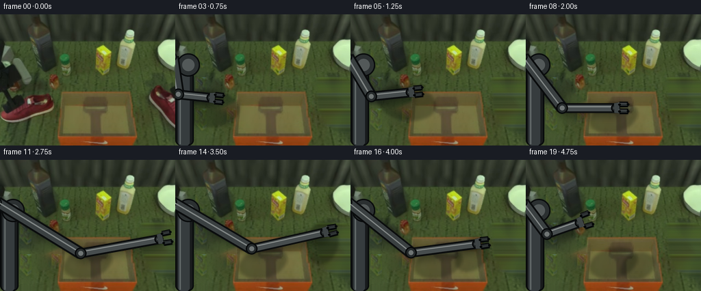
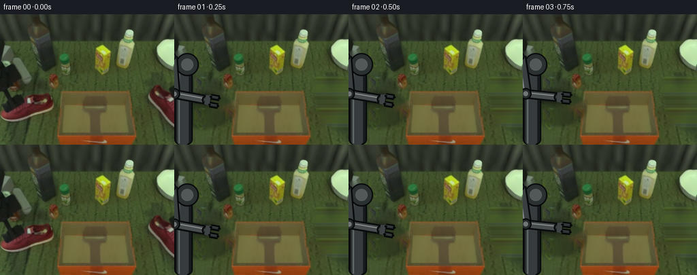
展开代码变化
--- 上一保存版本
+++ 本次保存版本
@@ -389,6 +389,17 @@
assert np.array_equal(frames[0], first)
artifact_io.save(frames, ROOT)
+ writer = cv2.VideoWriter(
+ str(ROOT / "video.mp4"),
+ cv2.VideoWriter_fourcc(*"mp4v"),
+ 4.0,
+ (WIDTH, HEIGHT),
+ )
+ assert writer.isOpened()
+ for frame in frames:
+ writer.write(frame[:, :, ::-1])
+ writer.release()
+
if __name__ == "__main__":
main()
可观测工具轨迹
实际执行的命令与返回图片。
命令 1exit 0
/bin/bash -c "pwd && rg --files -g 'prompt.txt' -g 'GENERATION_RULES.md' -g '"'!*.png'"' -g '"'!*.mp4'"' | head -200"
命令 2exit 0
/bin/bash -c "ls -la && find . -maxdepth 2 -type f | sed 's#"'^./##'"' | sort | head -300"
命令 3exit 0
/bin/bash -c 'cat prompt.txt'
命令 4exit 0
/bin/bash -c 'cat GENERATION_RULES.md'
命令 5exit 0
/bin/bash -c "cat task_spec.json && sed -n '1,240p' artifact_io.py"
命令 6exit 0
/bin/bash -c "which ffmpeg; which convert; which magick; python - <<'PY' import importlib.util for m in ['cv2','scipy','numpy','PIL','imageio','skimage']: print(m, bool(importlib.util.find_spec(m))) PY"
命令 7exit 0
/bin/bash -c "python - <<'PY'
from PIL import Image
im=Image.open('first_frame.png')
print(im.size, im.mode)
for name,box in [('left',(0,85,95,170)),('box',(80,100,205,192)),('right',(205,90,256,175))]:
im.crop(box).resize(((box[2]-box[0])*4,(box[3]-box[1])*4)).save('.tmp/'+name+'.png')
PY"命令 8exit 0
/bin/bash -c "python - <<'PY'
import cv2, numpy as np
im=cv2.imread('first_frame.png')[:,:,::-1]
# print selected pixel colors and red mask stats in boxes
for name,(x0,y0,x1,y1) in {'left':(0,108,90,165),'right':(215,95,256,165),'box':(90,115,205,192),'arm':(0,70,65,175)}.items():
a=im[y0:y1,x0:x1]
m=(a[:,:,0]>65)&(a[:,:,0]>a[:,:,1]*1.35)&(a[:,:,0]>a[:,:,2]*1.15)
print(name, a.shape, m.sum(), m.mean())
ys,xs=np.where(m)
if len(xs): print(' bounds', (xs.min()+x0,ys.min()+y0,xs.max()+x0,ys.max()+y0))
PY"命令 9exit 0
/bin/bash -c "python - <<'PY'
from PIL import Image
im=Image.open('first_frame.png')
# save upscaled 4x nearest for manual detail
im.resize((1024,768), Image.Resampling.NEAREST).save('.tmp/full4.png')
PY"命令 10exit 0
/bin/bash -c "python - <<'PY'
import cv2,numpy as np
im=cv2.imread('first_frame.png')[:,:,::-1]
for y in range(80,193,5):
print(y, [tuple(im[y,x]) for x in [0,20,40,60,80,100,128,160,180,200,220,240,255]])
PY"命令 11exit 0
/bin/bash -c "python - <<'PY'
import cv2,numpy as np
im=cv2.imread('first_frame.png')
hsv=cv2.cvtColor(im,cv2.COLOR_BGR2HSV)
# HSV ranges of red shoe excluding orange box
for name,(x0,y0,x1,y1) in {'left':(0,108,85,168),'right':(210,98,256,168),'box':(85,110,205,192)}.items():
a=hsv[y0:y1,x0:x1]
for lo,hi in [((0,40,30),(15,255,255)),((165,40,30),(179,255,255)),((0,20,70),(179,120,255))]:
m=cv2.inRange(a,np.array(lo),np.array(hi))>0
print(name,lo,hi,m.sum())
PY"命令 12exit 0
/bin/bash -c "python - <<'PY'
import cv2,numpy as np
im=cv2.imread('first_frame.png')
hsv=cv2.cvtColor(im,cv2.COLOR_BGR2HSV)
# print hue saturation value at selected positions / crop red mask
for x,y in [(20,130),(40,145),(65,130),(240,130),(245,150),(90,150),(128,150),(195,180),(100,120)]: print((x,y),im[y,x],hsv[y,x])
m=((hsv[:,:,0]<15)|(hsv[:,:,0]>165))&(hsv[:,:,1]>40)&(hsv[:,:,2]>30)
out=im.copy(); out[m]=[255,0,255]
cv2.imwrite('.tmp/redmask.png',out)
PY"命令 13exit 0
/bin/bash -c "python - <<'PY'
from PIL import Image,ImageDraw,ImageFont
im=Image.open('first_frame.png').resize((1024,768),Image.Resampling.NEAREST)
d=ImageDraw.Draw(im)
for x in range(0,257,10):
d.line((x*4,0,x*4,768), fill=(255,255,255), width=1)
if x%20==0: d.text((x*4+2,2),str(x),fill=(255,255,0))
for y in range(0,193,10):
d.line((0,y*4,1024,y*4), fill=(255,255,255), width=1)
if y%20==0: d.text((2,y*4+2),str(y),fill=(255,255,0))
im.save('.tmp/grid.png')
PY"命令 14exit 0
/bin/bash -c "python - <<'PY'
import cv2,numpy as np
im=cv2.imread('first_frame.png')[:,:,::-1]
for name,(x0,y0,x1,y1) in {'left':(0,105,88,165),'right':(216,98,256,165)}.items():
a=im[y0:y1,x0:x1]
r,g,b=a[:,:,0].astype(float),a[:,:,1].astype(float),a[:,:,2].astype(float)
m=(r>g*1.3)&(r>b*1.08)&(r>40)
# fill holes
mask=m.astype(np.uint8)*255
mask=cv2.morphologyEx(mask,cv2.MORPH_CLOSE,np.ones((5,5),np.uint8),iterations=2)
mask=cv2.morphologyEx(mask,cv2.MORPH_OPEN,np.ones((2,2),np.uint8))
n,lab,stats,cen=cv2.connectedComponentsWithStats(mask)
print(name)
for i in range(1,n):
if stats[i,4]>20: print(i,stats[i].tolist(),cen[i].tolist())
cv2.imwrite('.tmp/'+name+'mask.png',mask)
PY"命令 15exit 0
/bin/bash -c "python - <<'PY'
from PIL import Image
im=Image.open('first_frame.png')
im.crop((0,100,100,175)).resize((800,600),Image.Resampling.NEAREST).save('.tmp/leftbig.png')
im.crop((205,90,256,175)).resize((408,680),Image.Resampling.NEAREST).save('.tmp/rightbig.png')
PY"命令 16exit 0
/bin/bash -c "python - <<'PY'
import cv2,numpy as np
im=cv2.imread('first_frame.png')[:,:,::-1]
for name,(x0,y0,x1,y1) in {'left':(0,108,90,170),'right':(210,95,256,170)}.items():
a=im[y0:y1,x0:x1]
r,g,b=a[:,:,0].astype(float),a[:,:,1].astype(float),a[:,:,2].astype(float)
m=((r>g*1.30)&(r>b*1.05)&(r>42))
# Remove small specks; use close/open and fill holes
m8=m.astype(np.uint8)*255
m8=cv2.morphologyEx(m8,cv2.MORPH_CLOSE,np.ones((5,5),np.uint8),iterations=2)
m8=cv2.morphologyEx(m8,cv2.MORPH_OPEN,np.ones((2,2),np.uint8))
n,lab,stats,cen=cv2.connectedComponentsWithStats(m8)
best=1+np.argmax(stats[1:,4]); keep=(lab==best).astype(np.uint8)*255
# fill holes
cnts,_=cv2.findContours(keep,cv2.RETR_EXTERNAL,cv2.CHAIN_APPROX_SIMPLE)
fill=np.zeros_like(keep); cv2.drawContours(fill,cnts,-1,255,-1)
fill=cv2.morphologyEx(fill,cv2.MORPH_CLOSE,np.ones((3,3),np.uint8))
cv2.imwrite('.tmp/'+name+'fill.png',fill)
print(name, 'best',best,'area',stats[best,4], 'bbox',stats[best,:4])
PY"命令 17exit 0
/bin/bash -c "python - <<'PY'
from PIL import Image
im=Image.open('first_frame.png')
im.crop((0,0,120,192)).resize((480,768),Image.Resampling.NEAREST).save('.tmp/armbig.png')
PY"命令 18exit 0
/bin/bash -c "python - <<'PY'
from PIL import Image
im=Image.open('first_frame.png')
im.crop((0,60,90,192)).resize((540,792),Image.Resampling.NEAREST).save('.tmp/arm2.png')
PY"命令 19exit 0
/bin/bash -c "python - <<'PY'
import cv2,numpy as np
im=cv2.imread('first_frame.png')[:,:,::-1]
for p in [(45,112),(42,125),(47,134),(55,130),(58,140),(68,135),(52,122),(40,120),(20,110)]:
x,y=p; print(p, im[y,x])
PY"命令 20exit 0
/bin/bash -c "python - <<'PY'
import cv2,numpy as np
from PIL import Image
im=cv2.imread('first_frame.png')
mask=np.zeros(im.shape[:2],np.uint8)
# left arm + shoe, right shoe. Keep box and props.
polys=[
np.array([(0,58),(65,58),(96,105),(95,170),(0,175)],np.int32),
np.array([(208,93),(256,93),(256,176),(208,176)],np.int32),
]
for p in polys: cv2.fillPoly(mask,[p],255)
base=cv2.inpaint(im,mask,7,cv2.INPAINT_TELEA)
cv2.imwrite('.tmp/base.png',base)
cv2.imwrite('.tmp/base_mask.png',mask)
PY"命令 21exit 0
/bin/bash -c "python - <<'PY'
import cv2,numpy as np
im=cv2.imread('first_frame.png')[:,:,::-1]
x0,y0,x1,y1=214,96,256,166
crop=im[y0:y1,x0:x1].copy()
mask=np.zeros(crop.shape[:2],np.uint8)
poly=np.array([(3,7),(26,1),(42,11),(40,33),(35,50),(29,64),(24,66),(18,58),(15,50),(8,44),(3,32)],np.int32)
cv2.fillPoly(mask,[poly],cv2.GC_PR_FGD)
bg=np.zeros_like(mask); cv2.rectangle(bg,(0,0),(crop.shape[1]-1,crop.shape[0]-1),cv2.GC_PR_BGD,-1); bg[mask>0]=0
mask[bg==cv2.GC_PR_BGD]=cv2.GC_PR_BGD
# actually init: probable bg everywhere except polygon probable fg
mask=np.full(crop.shape[:2],cv2.GC_PR_BGD,np.uint8); cv2.fillPoly(mask,[poly],cv2.GC_PR_FGD)
bgd=np.zeros((1,65),np.float64); fgd=np.zeros((1,65),np.float64)
cv2.grabCut(cv2.cvtColor(crop,cv2.COLOR_RGB2BGR),mask,None,bgd,fgd,5,cv2.GC_INIT_WITH_MASK)
a=np.where((mask==cv2.GC_FGD)|(mask==cv2.GC_PR_FGD),255,0).astype(np.uint8)
a=cv2.morphologyEx(a,cv2.MORPH_CLOSE,np.ones((3,3),np.uint8))
a=cv2.morphologyEx(a,cv2.MORPH_OPEN,np.ones((2,2),np.uint8))
# keep largest comp, fill holes
n,lab,stats,cen=cv2.connectedComponentsWithStats(a)
best=1+np.argmax(stats[1:,4]); a=(lab==best).astype(np.uint8)*255
cnts,_=cv2.findContours(a,cv2.RETR_EXTERNAL,cv2.CHAIN_APPROX_SIMPLE); cv2.drawContours(a,cnts,-1,255,-1)
a=cv2.GaussianBlur(a,(3,3),0.6)
cv2.imwrite('.tmp/shoe_rgba.png',cv2.cvtColor(crop,cv2.COLOR_RGB2BGRA)[:,:, :3] if False else np.dstack([crop,a])[:,:,::-1])
cv2.imwrite('.tmp/shoe_alpha.png',a)
print(a.shape)
PY"命令 22exit 0
/bin/bash -c "python - <<'PY'
import cv2,numpy as np
# make right shoe sprite from crop with hand-curated shoe polygon, omitting background.
im=cv2.imread('first_frame.png')[:,:,::-1]
x0,y0=212,95; crop=im[y0:y0+75,x0:x0+44].copy()
poly=np.array([(1,7),(21,1),(34,3),(41,9),(43,18),(39,30),(34,44),(31,56),(29,65),(23,69),(17,68),(15,60),(12,53),(8,46),(5,38),(2,31)],np.int32)
a=np.zeros(crop.shape[:2],np.uint8); cv2.fillPoly(a,[poly],255)
# soften only one px
a=cv2.GaussianBlur(a,(3,3),0.45)
cv2.imwrite('.tmp/right_sprite.png',np.dstack([crop,a])[:,:,::-1])
cv2.imwrite('.tmp/right_sprite_alpha.png',a)
PY"命令 23exit 0
/bin/bash -c "python - <<'PY'
import cv2,numpy as np
im=cv2.imread('first_frame.png')[:,:,::-1]
x0,y0=0,105; crop=im[y0:y0+70,x0:x0+91].copy()
# shoe polygon extends outside left crop; manually trace silhouette from x0=0.
poly=np.array([(0,12),(15,8),(34,11),(50,16),(66,21),(76,27),(82,35),(79,43),(69,47),(57,48),(47,53),(37,55),(27,53),(16,49),(9,46),(3,39)],np.int32)
a=np.zeros(crop.shape[:2],np.uint8); cv2.fillPoly(a,[poly],255)
# Include white sole as part of shoe, but lower boundary avoid arm at top.
a=cv2.GaussianBlur(a,(3,3),0.45)
cv2.imwrite('.tmp/left_sprite.png',np.dstack([crop,a])[:,:,::-1])
cv2.imwrite('.tmp/left_sprite_alpha.png',a)
PY"命令 24exit 1
/bin/bash -c 'python generate.py'
命令 25exit 1
/bin/bash -c 'python generate.py'
命令 26exit 1
/bin/bash -c 'python generate.py'
命令 27exit 0
/bin/bash -c 'python generate.py'
命令 28exit 0
/bin/bash -c "python - <<'PY'
import cv2,numpy as np
im=cv2.imread('first_frame.png')[:,:,::-1]
for name,(x0,y0,x1,y1) in {'left':(0,105,90,170),'right':(210,94,256,170)}.items():
a=im[y0:y1,x0:x1].copy()
r,g,b=a[:,:,0].astype(float),a[:,:,1].astype(float),a[:,:,2].astype(float)
# broad object color mask: red or neutral sole. dark wood/table excluded
red=(r>35)&(r>g*1.18)&(r>b*0.95)
neutral=(r>70)&(g>70)&(b>65)&(np.max(a,axis=2)-np.min(a,axis=2)<45)
m=(red|neutral).astype(np.uint8)*255
m=cv2.morphologyEx(m,cv2.MORPH_CLOSE,np.ones((5,5),np.uint8),iterations=1)
# remove small comps
n,lab,stats,cen=cv2.connectedComponentsWithStats(m)
m2=np.zeros_like(m)
for i in range(1,n):
if stats[i,4]>12: m2[lab==i]=255
cv2.imwrite('.tmp/'+name+'_broad.png',m2)
print(name,stats.tolist())
PY"命令 29exit 0
/bin/bash -c "python - <<'PY'
from PIL import Image
im=Image.open('first_frame.png')
im.crop((0,100,100,175)).resize((1000,750),Image.Resampling.NEAREST).save('.tmp/leftdetail.png')
PY"命令 30exit 0
/bin/bash -c "python - <<'PY'
import cv2,numpy as np
im=cv2.imread('first_frame.png')
# preview final placement with simple sprite; actual output from generate inspection has details
PY"命令 31exit 0
/bin/bash -c "python - <<'PY'
import cv2,numpy as np
im=cv2.imread('first_frame.png')[:,:,::-1]
# sample hues at right shoe crop / build color clustering
crop=im[96:160,213:255]
z=crop.reshape(-1,3).astype(np.float32)
crit=(cv2.TERM_CRITERIA_EPS+cv2.TERM_CRITERIA_MAX_ITER,40,0.5)
_,labels,centers=cv2.kmeans(z,6,None,crit,4,cv2.KMEANS_PP_CENTERS)
for i,c in enumerate(centers): print(i,c.round().astype(int),np.sum(labels==i))
PY"命令 32exit 0
/bin/bash -c "python - <<'PY'
from PIL import Image
im=Image.open('first_frame.png')
im.crop((205,90,256,175)).resize((510,850),Image.Resampling.NEAREST).save('.tmp/rightdetail.png')
PY"命令 33exit 0
/bin/bash -c 'python generate.py'
命令 34exit 0
/bin/bash -c 'python generate.py'
命令 35exit 1
/bin/bash -c "python generate.py && python - <<'PY'
from pathlib import Path
import hashlib, json
import numpy as np
from PIL import Image
import cv2
root=Path('.')
spec=json.loads((root/'task_spec.json').read_text())
p=np.load(root/'pixels.npz')['pixels']
print('pixels',p.shape,p.dtype,'expected',(spec['frames'],spec['height'],spec['width']))
frames=sorted((root/'frames').glob('*.png'))
print('frame files',len(frames))
first=np.array(Image.open('first_frame.png').convert('RGB'))
f0=np.array(Image.open(frames[0]).convert('RGB'))
print('frame00 identical',np.array_equal(first,f0))
print('frame00 sha256',hashlib.sha256(first.tobytes()).hexdigest())
print('frame00 generated sha256',hashlib.sha256(f0.tobytes()).hexdigest())
print('index.html bytes',(root/'index.html').stat().st_size)
cap=cv2.VideoCapture('video.mp4')
print('mp4 open',cap.isOpened(),'frames',int(cap.get(cv2.CAP_PROP_FRAME_COUNT)),'fps',cap.get(cv2.CAP_PROP_FPS),'size',int(cap.get(cv2.CAP_PROP_FRAME_WIDTH)),int(cap.get(cv2.CAP_PROP_FRAME_HEIGHT)))
cap.release()
PY"命令 36exit 0
/bin/bash -c 'ls -la pixels.npz index.html video.mp4 frames 2>&1 | head -60'
命令 37exit 0
/bin/bash -c "mount | rg 'workspace|bn/' | head -20; stat -c '%A %U %G %n' . pixels.npz frames index.html 2>&1"
命令 38exit 0
/bin/bash -c "python - <<'PY'
from pathlib import Path
p=Path('pixels.npz')
print('exists',p.exists(),'mode',oct(p.stat().st_mode),'size',p.stat().st_size)
try:
p.unlink(); print('unlink ok')
except Exception as e: print('unlink err',repr(e))
try:
p.write_bytes(b'test'); print('write ok',p.stat().st_size)
except Exception as e: print('write err',repr(e))
PY"命令 39exit 0
/bin/bash -c 'python generate.py'
命令 40exit 0
/bin/bash -c "python - <<'PY'
from pathlib import Path
import hashlib, json
import numpy as np
from PIL import Image
import cv2
root=Path('.')
spec=json.loads((root/'task_spec.json').read_text())
p=np.load(root/'pixels.npz')['pixels']
print('pixels',p.shape,p.dtype,'expected',(spec['frames'],spec['height'],spec['width']))
frames=sorted((root/'frames').glob('*.png'))
print('frame files',len(frames))
first=np.array(Image.open('first_frame.png').convert('RGB'))
f0=np.array(Image.open(frames[0]).convert('RGB'))
print('frame00 identical',np.array_equal(first,f0))
print('frame00 sha256',hashlib.sha256(first.tobytes()).hexdigest())
print('frame00 generated sha256',hashlib.sha256(f0.tobytes()).hexdigest())
print('index.html bytes',(root/'index.html').stat().st_size)
cap=cv2.VideoCapture('video.mp4')
print('mp4 open',cap.isOpened(),'frames',int(cap.get(cv2.CAP_PROP_FRAME_COUNT)),'fps',cap.get(cv2.CAP_PROP_FPS),'size',int(cap.get(cv2.CAP_PROP_FRAME_WIDTH)),int(cap.get(cv2.CAP_PROP_FRAME_HEIGHT)))
cap.release()
PY"命令 41exit 1
/bin/bash -c "python - <<'PY'
from pathlib import Path
import hashlib, numpy as np
from PIL import Image
# Validate every saved PNG and pixel tensor, plus deterministic second render hash.
fs=sorted(Path('frames').glob('*.png'))
ims=[np.array(Image.open(p).convert('RGB')) for p in fs]
print('all png', all(a.shape==(192,256,3) and a.dtype==np.uint8 for a in ims))
print('frames fingerprint',hashlib.sha256(b''.join(a.tobytes() for a in ims)).hexdigest())
packed=np.load('pixels.npz')['pixels']
restored=np.stack([(packed>>16)&255,(packed>>8)&255,packed&255],axis=-1).transpose(2,0,1)
print('pixels roundtrip',np.array_equal(restored,np.asarray(ims)))
print('unique-pixel counts', [len(np.unique(a.reshape(-1,3),axis=0)) for a in ims])
PY"命令 42exit 1
/bin/bash -c "python - <<'PY'
from pathlib import Path
import hashlib, numpy as np
from PIL import Image
fs=sorted(Path('frames').glob('*.png'))
ims=[np.array(Image.open(p).convert('RGB')) for p in fs]
packed=np.load('pixels.npz')['pixels']
restored=np.stack([(packed>>16)&255,(packed>>8)&255,packed&255],axis=-1)
print('pixels shape',packed.shape)
print('pixels roundtrip',np.array_equal(restored.transpose(2,0,1),np.asarray(ims)))
print('all png', all(a.shape==(192,256,3) and a.dtype==np.uint8 for a in ims))
print('frames fingerprint',hashlib.sha256(b''.join(a.tobytes() for a in ims)).hexdigest())
print('unique-pixel counts', [len(np.unique(a.reshape(-1,3),axis=0)) for a in ims])
PY"命令 43exit 0
/bin/bash -c "python - <<'PY'
from pathlib import Path
import hashlib, numpy as np
from PIL import Image
fs=sorted(Path('frames').glob('*.png'))
ims=[np.array(Image.open(p).convert('RGB')) for p in fs]
packed=np.load('pixels.npz')['pixels']
restored=np.stack([(packed>>16)&255,(packed>>8)&255,packed&255],axis=-1).transpose(2,0,1,3)
print('pixels shape',packed.shape)
print('pixels roundtrip',np.array_equal(restored,np.asarray(ims)))
print('all png', all(a.shape==(192,256,3) and a.dtype==np.uint8 for a in ims))
print('frames fingerprint',hashlib.sha256(b''.join(a.tobytes() for a in ims)).hexdigest())
print('unique-pixel counts', [len(np.unique(a.reshape(-1,3),axis=0)) for a in ims])
PY"命令 44exit 0
/bin/bash -c "python - <<'PY'
import cv2
cap=cv2.VideoCapture('video.mp4')
ims=[]
while True:
ok,im=cap.read()
if not ok: break
ims.append(im)
cap.release()
h,w=ims[0].shape[:2]
sheet=255*__import__('numpy').ones((h*2,w*10,3),dtype='uint8')
for i,im in enumerate(ims):
y=(i//10)*h; x=(i%10)*w; sheet[y:y+h,x:x+w]=im
cv2.imwrite('.tmp/mp4_sheet.png',sheet)
print(len(ims),sheet.shape)
PY"命令 45exit 0
/bin/bash -c 'python -m py_compile generate.py && git status --short 2>/dev/null || true; ls -lh generate.py pixels.npz index.html video.mp4 inspection.png'
命令 46exit 0
/bin/bash -c 'sha256sum frames/00.png frames/19.png pixels.npz index.html video.mp4 > .tmp/submission_hashes.txt && cat .tmp/submission_hashes.txt'
视觉工具实际返回图片 1
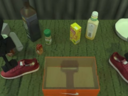
视觉工具实际返回图片 2
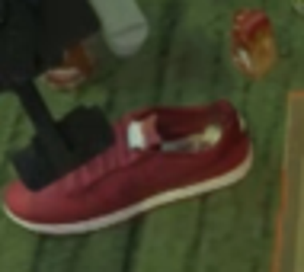
视觉工具实际返回图片 3
视觉工具实际返回图片 4
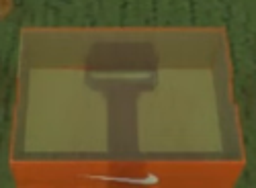
视觉工具实际返回图片 5
视觉工具实际返回图片 6
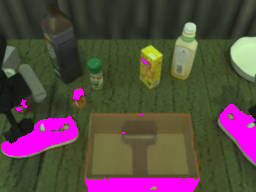
视觉工具实际返回图片 7
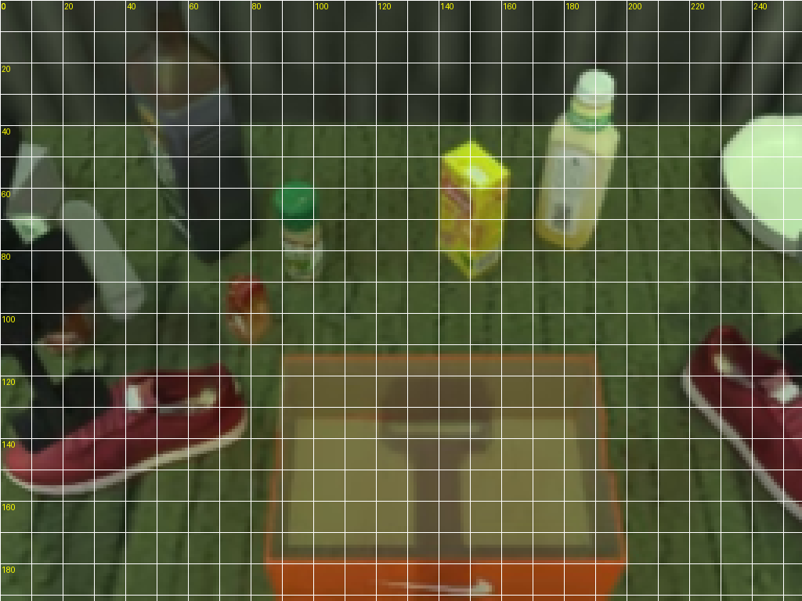
视觉工具实际返回图片 8
视觉工具实际返回图片 9
视觉工具实际返回图片 10
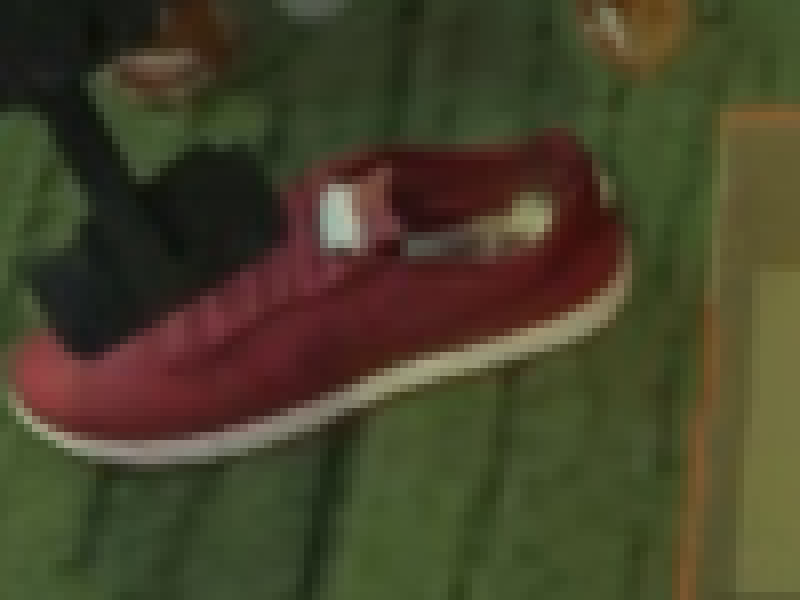
视觉工具实际返回图片 11
视觉工具实际返回图片 12
视觉工具实际返回图片 13
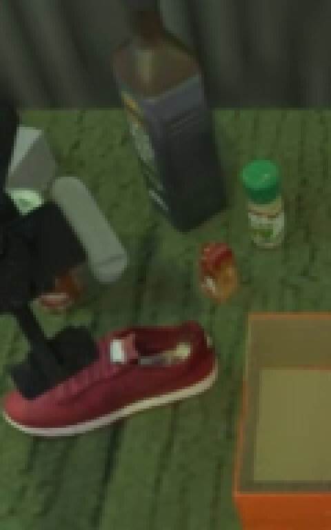
视觉工具实际返回图片 14
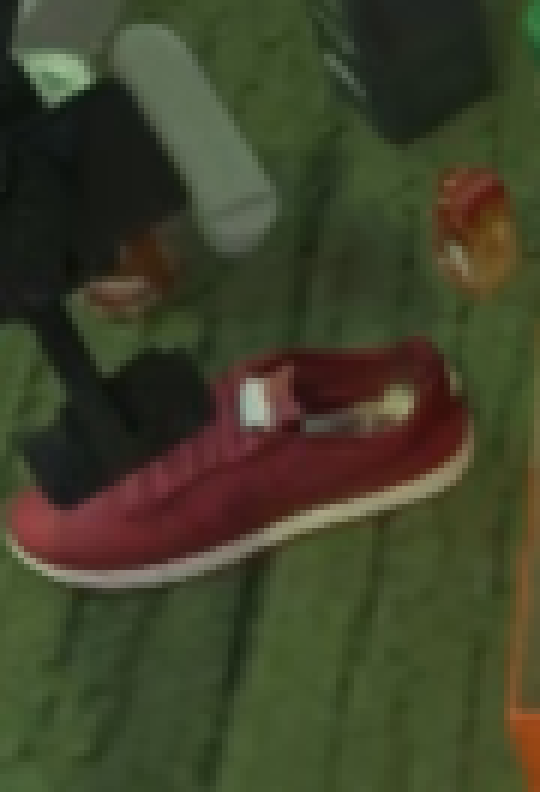
视觉工具实际返回图片 15
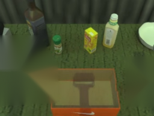
视觉工具实际返回图片 16
视觉工具实际返回图片 17
视觉工具实际返回图片 18
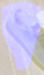
视觉工具实际返回图片 19
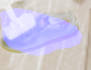
视觉工具实际返回图片 20
视觉工具实际返回图片 21

视觉工具实际返回图片 22
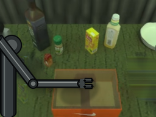
视觉工具实际返回图片 23
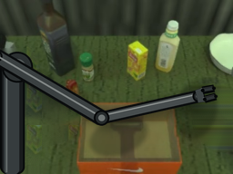
视觉工具实际返回图片 24
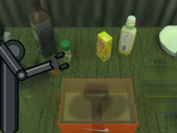
视觉工具实际返回图片 25
视觉工具实际返回图片 26
视觉工具实际返回图片 27
视觉工具实际返回图片 28
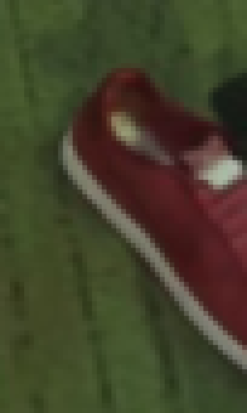
视觉工具实际返回图片 29

视觉工具实际返回图片 30
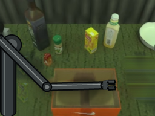
视觉工具实际返回图片 31
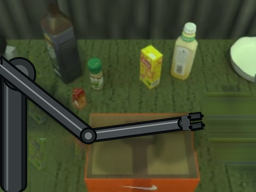
视觉工具实际返回图片 32
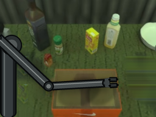
视觉工具实际返回图片 33
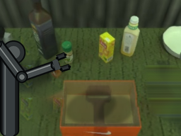
视觉工具实际返回图片 34
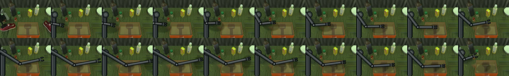
保存候选 4 份；完成命令 46 次；可验证图片返回 34 张。原始 API 响应与完整日志保留在本地。